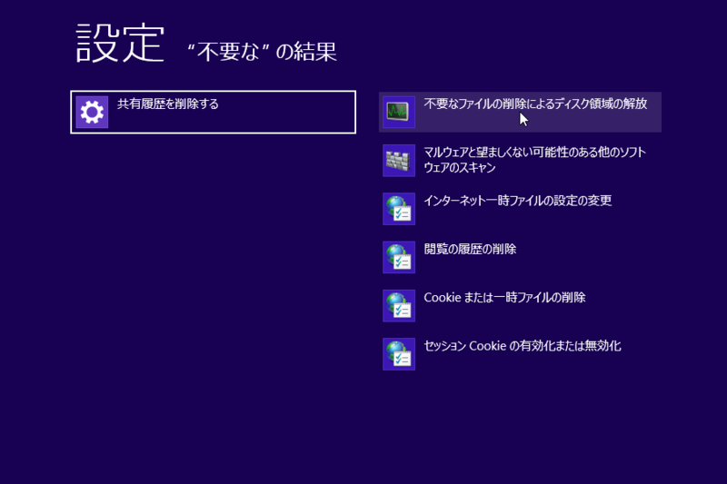
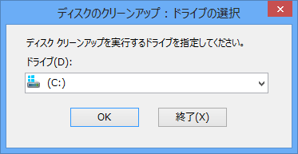
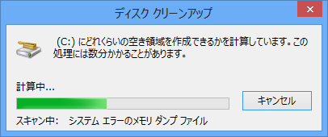
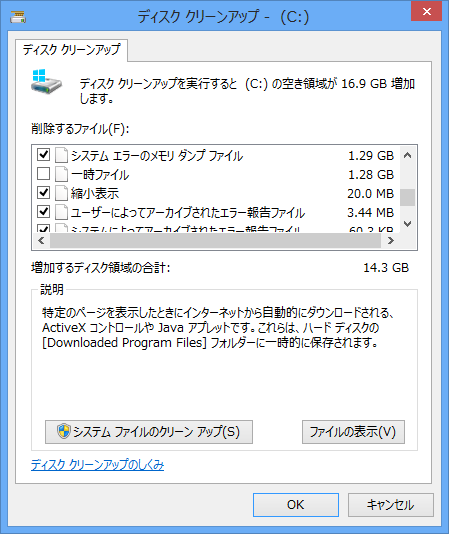
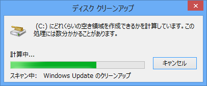
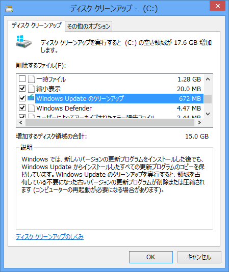

Windows Update のクリーンアップ
公開日：
Microsoft Corporationは7日、Windows 7に標準搭載されているドライブ内の不要ファイル削除ツール「ディスク クリーンアップ」に“Windows Update のクリーンアップ”機能を追加する更新プログラム「Windows 7 用更新プログラム (KB2852386)」をService Pack 1を適用したWindows 7および同64bit版向けに公開した。現在、“Windows Update”経由でインストールするほか、同社のダウンロードセンターからダウンロードできる。
Windows 8 では確か昔からできたはず（ディスク クリーンアップを使用してファイルを削除する - Microsoft Windows ヘルプ）なので、これは要するに Windows 7 の「ディスク クリーンアップ」を Windows 8 相当にするパッチなわけだが（あんまりちゃんと調べてない）、なんでそう書かなかったのかは知らない。
念のため、一応 Windows 8 での動作を確認しておく。
「ディスク クリーンアップ」の起動

「不要なファイルの削除によるディスク領域の解放」を選択。“不要”とか“ディスク”で設定を検索するとサクッとでてくる。
システム ファイルの削除

ディスクの選択。

削除項目の検索。

削除項目の列挙。ここでは Windows Update のクリーンアップは出てこないが、これは管理者権限で起動していないため。［システム ファイルのクリーン アップ］ボタンを押すと、管理者権限でツールが再起動される。
もう一度ディスクの選択。

削除項目の検索。今回は前回よりも多少時間がかかるはず。

Windows Update のクリーン アップが項目に出てきた！